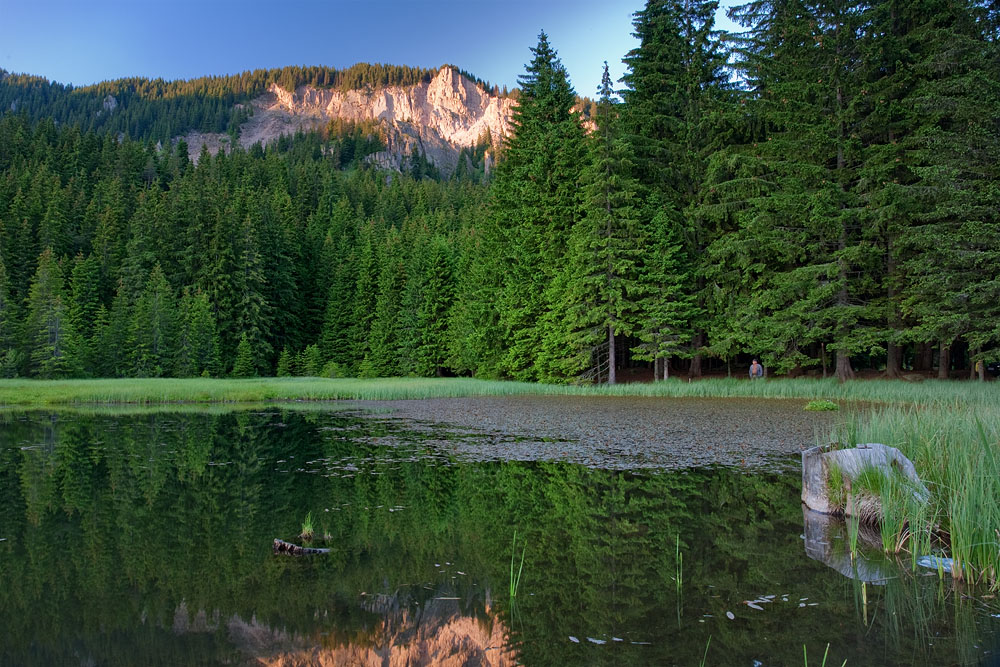

Пръснати са по левия склон на долината на Черна река,
от Орфеевите скали и връх Снежанка до град Смолян. Образувани са в тилните понижения на голямо свлачище, получено в резултат
на контакта на риолитни скали и намиращите се под тях водоупорни седиментни скали.
В миналото са били над 20 езера, но сега са останали само 8, като 7 от тях са естествени,
а едно от тях (Керяновия гьол) е превърнато в микроязовир. Другите днес представляват блата. Пролет и есен на мястото на някои от
тези блата отново се появяват малки езерца. Други са превърнати в рибарници.

Най-голямо е Тревистото (Тревното) езеро 41°37′03″ с. ш. 24°39′56″ и. д.,
с площ ок. 6 - 8 ха, от което е останало не повече от 10 на 10 метра, а най-дълбоко е Мътното езеро – 4,5 м, което е и
най-високо разположеното – на 1500 м и на 41°37′17″ с. ш. 24°40′40″ и. д. и е с площ 1,6 ха. Останалите по-големи езера са
Лагера (Лъгът), Платеното езеро (Керяновия гьол, Керанов гьол, Кирянов гьол) (7 ха), Бистрото езеро (3 ха), Османовия гьол (2,3 ха),
Силажа (4,5 ха), Милушевското езеро (Милушевия гьол) (5 ха) и Лиляковото (Люляковото, Люкасовото) езеро (2 ха). Езеро Източно (1,2 ха)
не е с постоянно водно огледало и през летно-есенния период пресъхва.